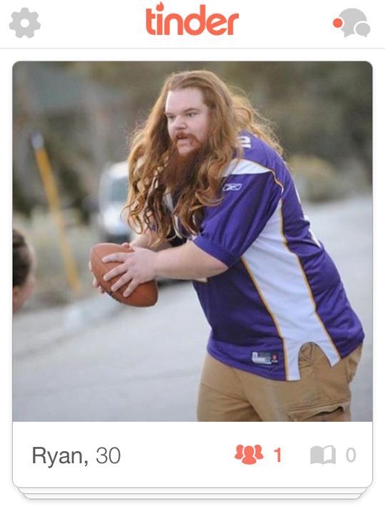

| #scuba
| #scuba  | #travel
| #travel  | #nyc
| #nyc 
Monday, October 12th, 2015
Group_By in Enumerables
Hello again! Today, i'm going to be discussing the "Group By" method in Ruby, or (group_by). Like arrays, and most things Ruby, group_by can be as complicated or as uncomplicated as you want it, but for the purposes of this tutorial, let's keep it as simple as possible.
Any of you on Tinder? Don't lie. Well, if for some reason, you're one of those unicorns who have beat all obstacles in today's modern dating world, ended up in a healthy relationship, and are also living under a rock, I'll explain: Tinder is a mobile dating app that just shows you a picture of another Tinder user, and encourages you to decide immediately if you like them or not, just based on their picture. If you look at this person's face, and decide you are attracted to them, you swipe right on the screen, and if you aren't, you swipe left. If this other user has swiped right, you are able to chat with each other, and if not, you won't be able to until the other user has done so, if they ever do.
Despite the fact that Tinder is a horrible app that will ultimately lead to the extinction of the human race, it is pretty handy in terms of connecting users with nearby matches, with their location-based software.
Let's say, Ren, a heterosexual female, joins Tinder in search of that perfect beard-sporting, dad-bodded intellectual, who has absolutely no fear of commitment for whatever reason. We want to make sure she doesn't have to look too far beyond Bushwick to find him.

For this example, let's pretend that there are only seven straight male users on Tinder, because the world would be a much better place if there were.In the database we have:
Crazy P (3 miles away)
Cheeks (1 mile away)
The British Ghost (3465 miles away)
Juban (3 miles away)
Speedy (1 mile away)
Dr. Rocket (2 miles away)
Homer Simpson (4 miles away)
In the system, these names and distances would be stored as a hash. A hash is a way of storing data as a collection of key/value pairs. It is similar to an array, but the difference being, that the information is indexed by arbitrary keys, instead of a numeric index, or ordered list.
Here is what our index of straight male Tinder users might look like if it were stored as a Ruby hash:
str_male_users = { 'Crazy P' => 3, 'Cheeks' => 1, 'The British Ghost' => 3465, 'Juban' => 3, 'Speedy' => 1, 'Dr. Rocket' => 2, 'Homer Simpson' => 4 }
So here's what we do in order to group by distance:
str_male_users.group_by { |name, distance| distance }
What we're doing in the above method, is telling Ruby we want to group the hash of straight male users. The "|name, distance|" variables are simply placeholders for the key/value pairs in each hash. They could be called anything really, "|a, b|" or "|apple, banana|", "|blue, wooden|". All they are doing is telling Ruby that it is looking for a key and a value to return from this hash. The "distance" variable, outside the pipe brackets, is also just a placeholder. It's telling Ruby that this is the variable we are going to use to form groups.
A couple important things to remember: though "distance" is just a placeholder and can be called anything, it MUST be the same string or character as the second word in the pipe bracket, otherwise, Ruby won't understand what you're trying to reference. Also, though we can technically order by name, that will not be helpful because it will simply return all the users in the order the were entered into the system, as opposed to their distance.
So now we run the program. Here's what gets returned:
{3=>[["Crazy P", 3], ["Juban", 3]], 1=>[["Cheeks", 1], ["Speedy", 1]], 3465=>[["The British Ghost", 3465]], 2=>[["Dr. Rocket", 2]], 4=>[["Homer Simpson", 4]]}
Hold on a minute. So this program did what we wanted it to by grouping straight male Tinder users based on distance, however, it's not very helpful to Ren to see them in no particular order. I mean, the british accent is hot and all but she'd probably like to see a guy who is 2 miles away as opposed to 3465.
So in order to ensure Ren doesn't have to travel too far to get entangled in a dating disaster, we want to show her the local trainwrecks first before moving on to other outside emotionally detached men. In order to do this, we are simply going to alter our code by adding one more instruction, sort_by. If we want to order our returned hash based on integers, sort_by will do that chronologically by default. Here is what our code looks like now:
str_male_users.group_by.sort_by { |name, distance| distance }
And here's what we get returned:
=> [["Speedy", 1], ["Cheeks", 1], ["Dr. Rocket", 2], ["Juban", 3], ["Crazy P", 3], ["Homer Simpson", 4], ["The British Ghost", 3465]]
And just like that, Ren easily lands her next 3 week boyfriend!
*One last important thing to note is that, when we choose to use order_by, it is simply returning the data from this hash in this order. Nothing is being printed to the screen, and additional steps would be needed for that.
Until next time! -J